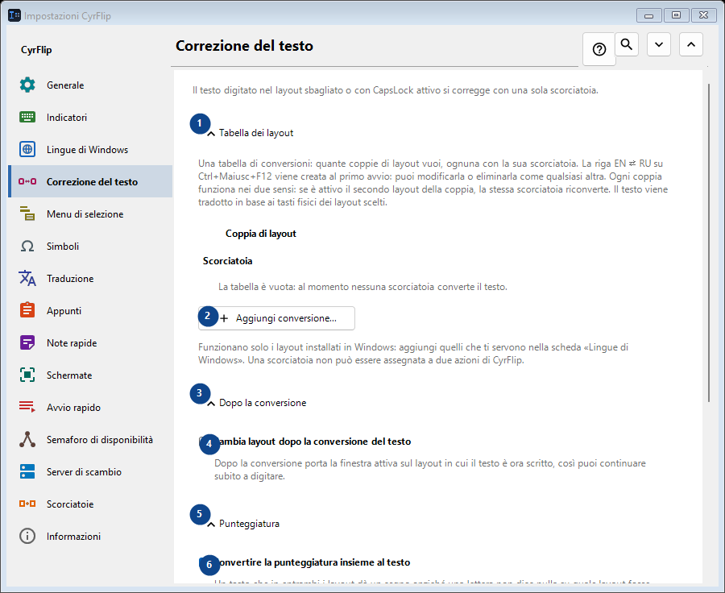
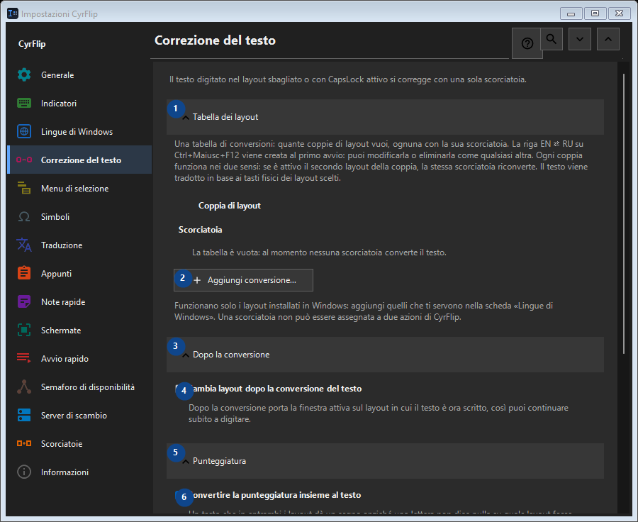

Correzione del testo
A cosa serve
Il testo digitato nel layout sbagliato o con CapsLock attivo si corregge con una sola scorciatoia.


Ordine delle operazioni
Le impostazioni si applicano subito. Non serve un ordine preciso; usa i gruppi qui sotto.
Elementi
1. Tabella dei layout
Usa questo comando per l’azione indicata. Leggi ogni richiesta di conferma prima di accettare.
Le tue scorciatoie2. Aggiungi conversione...
Usa questo comando per l’azione indicata. Leggi ogni richiesta di conferma prima di accettare.
Le tue scorciatoie3. Dopo la conversione
Usa questo comando per l’azione indicata. Leggi ogni richiesta di conferma prima di accettare.
Le tue scorciatoie4. Cambia layout dopo la conversione del testo
Dopo la conversione porta la finestra attiva sul layout in cui il testo è ora scritto, così puoi continuare subito a digitare.
Le tue scorciatoie5. Punteggiatura
Usa questo comando per l’azione indicata. Leggi ogni richiesta di conferma prima di accettare.
Le tue scorciatoie6. Convertire la punteggiatura insieme al testo
Un tasto che in entrambi i layout dà un segno anziché una lettera non dice nulla su quale layout fosse attivo: dietro «/» il tasto russo ha un punto, e la «/» del tastierino numerico è la stessa ovunque e nel testo copiato non si distingue da quella normale. Finché la casella è spuntata, questi segni vengono convertiti insieme al testo: è così che CyrFlip si è sempre comportato. Toglila se li digiti apposta più spesso: «/ghbdtn» manterrà allora la sua barra invece di iniziare con un punto. I segni sul cui tasto l''altro layout ha una lettera (la virgola, le parentesi) vengono convertiti in ogni caso.
Le tue scorciatoie7. Maiuscole e minuscole
Usa questo comando per l’azione indicata. Leggi ogni richiesta di conferma prima di accettare.
Le tue scorciatoie8. Correggi CapsLock
Inverte maiuscole e minuscole nella selezione; utile dopo aver attivato CapsLock per errore.
Le tue scorciatoie9. Modifica - Correggi CapsLock
Usa questo comando per l’azione indicata. Leggi ogni richiesta di conferma prima di accettare.
Le tue scorciatoie10. Sincronizza CapsLock dopo la correzione delle maiuscole
Dopo la correzione cambia lo stato fisico di CapsLock, così i tasti successivi corrispondono al testo corretto.
Le tue scorciatoie